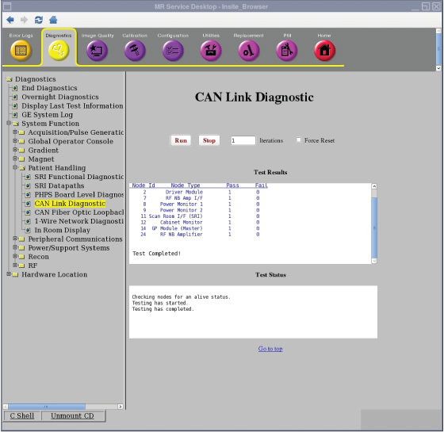

- 00000018WIA30154E20GYZ
- id_131058393.2
- Oct 11, 2021 3:56:10 PM
Doing the Controller Area Network (CAN) link diagnostic
Do a read-write test on any available nodes on the Controller Area Network (CAN) network.
Diagnostic link

Purpose
The purpose of this diagnostic is to perform a read-write test on any available nodes on the CAN network.
CAN is a communications layer used to communicate serially to nodes over a high speed data layer. The CAN network uses a protocol called CAN open to communicate with its peripherals, or nodes. Each node has a unique node ID (1-31), which helps determine where each message is intended to arrive.
This test will determine which nodes are available on the link by listening in to the network and determining which nodes are available based on their Node IDs. Once the nodes are detected, a walking ones pattern is sent to each node and read back to verify the communications link. The test can be set to run several iterations to help find any intermittent failures.
The Force Reset button is available to force a reset of the nodes before running the test. This is used in the case when a reset is required to put all the nodes in a known normal state. The test however, should be first run without the reset to determine if any nodes are in a bad state. The Force Reset button should be used as a fall back to bring the nodes back to a normal state.
Components tested
Nodes available for detection by this test are:
- Driver Module (Node ID 2)
- RF NB Amp I/F (Node ID 7)
- Power Monitor 1 (Node ID 8)
- Power Monitor 2 (Node ID 9)
- SRI (Node ID 11)
- Cabinet Monitor (Node ID 12)
- GP Module (Node ID 14)
- RF Amp (Node ID 24)
- Optional RF BB Amp I/F (Node ID 6)
- Optional HOS (Node ID 16)
- CFB (Node ID 20)
Requirements
None
Test sequence
This diagnostic first detects all the available nodes on the CAN link by monitoring the Node Guarding messages.
- On the CAN Link Diagnostic page, enter the number of times you want the test to run in the Iterations field.
The test can be set to run several iterations to help find any intermittent failures.
- Click Run.
- After nodes are detected, they are logged to the screen and then a data path test is run on each of them sequentially. The data path test consists of writing a walking ones pattern on the Diagnostic Dictionary Index on the node and reading it back.
- The received data is checked to ensure its validity. The data path test is repeated three times on each node. Any errors will result in an error message logged and the information written to the screen.
Expected results
A status message displays for any nodes not tested that are detected and/or configured. Here is a list of reasons a node may not be tested.
- Not detected
- Not detected - Node configured and emulated
- Not tested - Node detected but configured and emulated
- Not tested - Node detected but emulated
- Not tested - Node detected but not configured
If any configuration or emulation result is seen, make sure the configuration of the system is correct and that no emulations exist for that node.
If nodes are not detected, it is possible that:
- Driver Module powered off
- CAN Terminator not installed on the last node on the CAN link
- Not all nodes connected on the CAN link, including SCP, or CAN cable disconnected
- System configuration incorrect, if only some nodes not detected
- SCP or CAN PMC failures. Run the CAN datapath diagnostic to verify SCP to CAN PMC communication